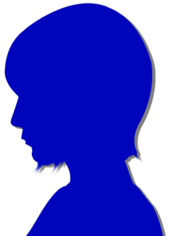
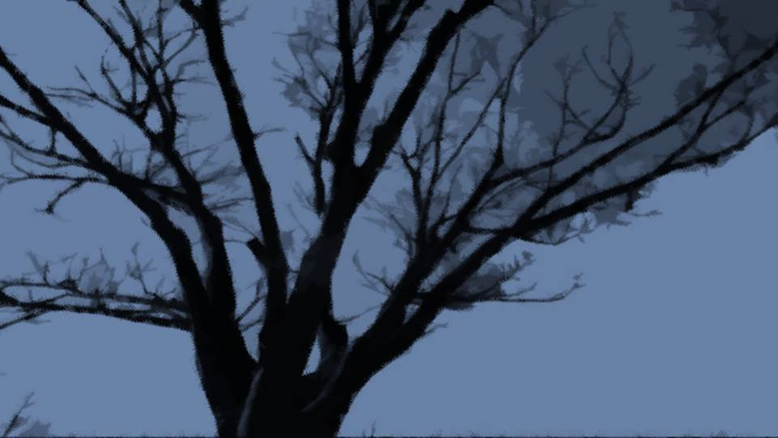
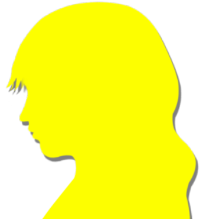
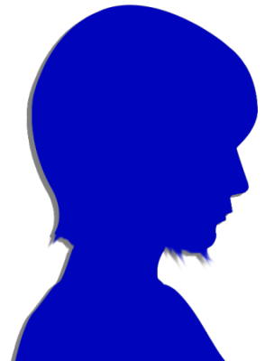
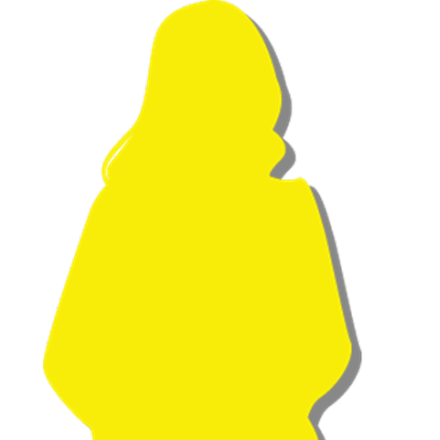
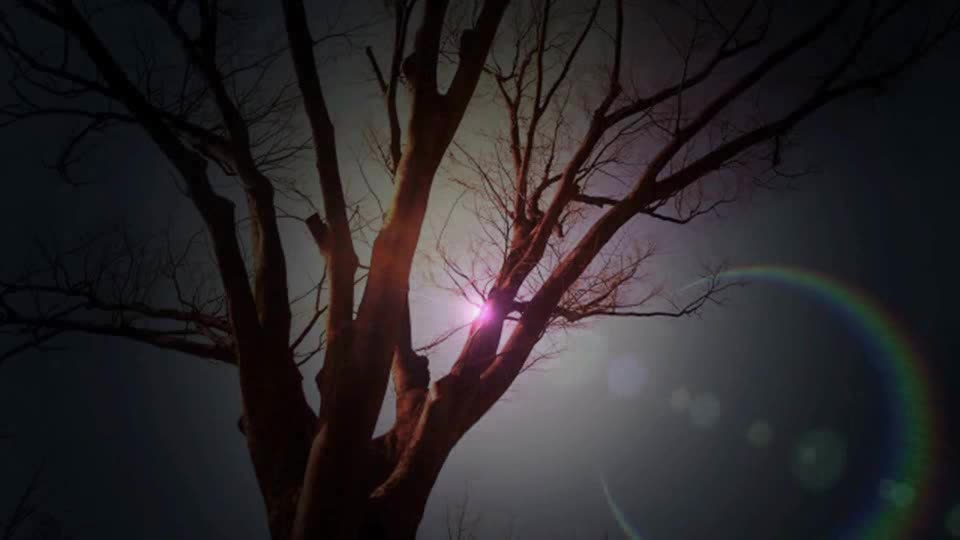
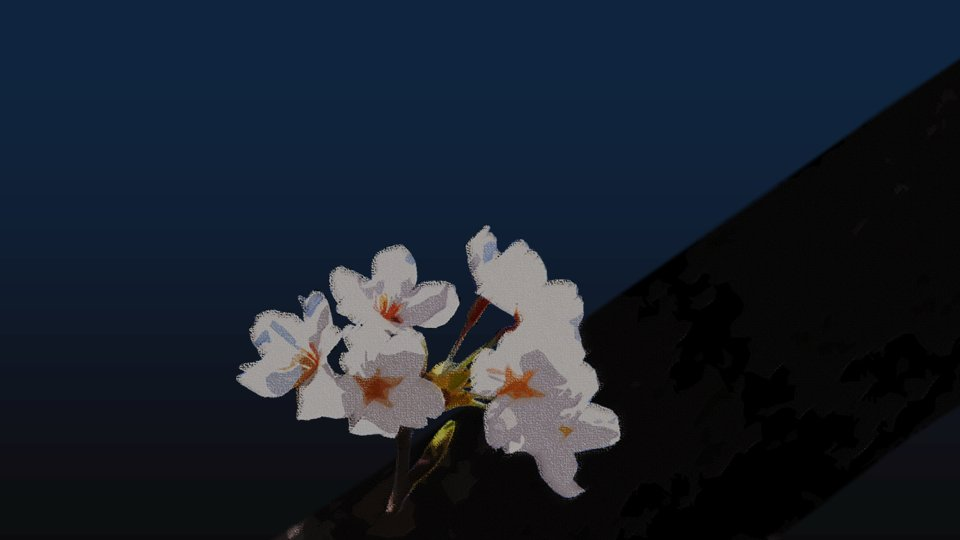
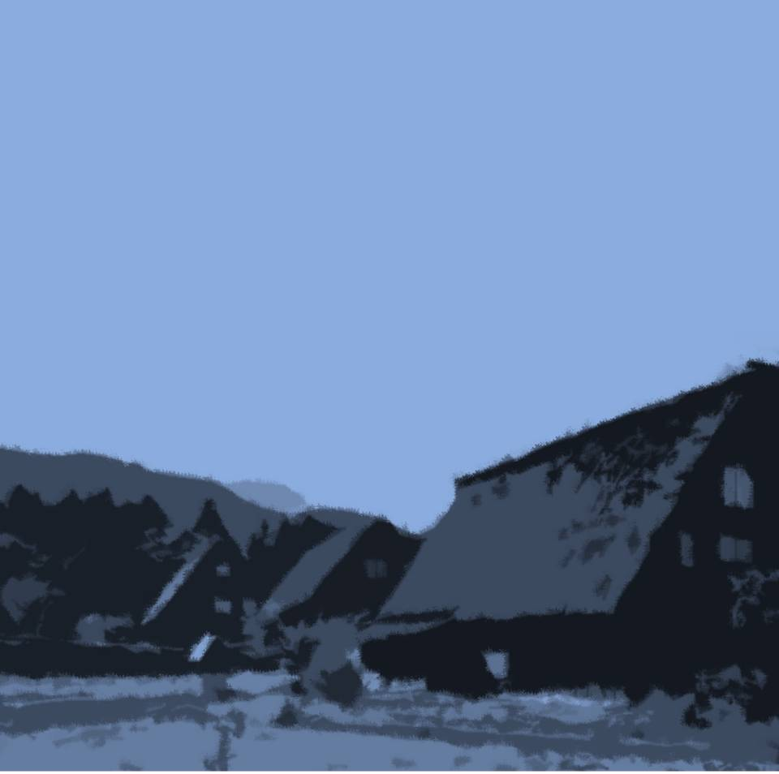

This scene is not unlocked yet in your progress
最後の声

2階の部屋に戻ると、春花が窓の前に立っていた。
外から柔らかな風が吹き込んでくる。
外から柔らかな風が吹き込んでくる。

「まだ、起きてたんだ」

「大事な話するって言っただろ？」
春花の声に元気がない。
さっき廊下ですれ違った時もだ。
春花の声に元気がない。
さっき廊下ですれ違った時もだ。
元気がないのは、大事な話に関することなのだろうか。
長い付き合いだから、なんとなくわかる。
春花は今、とても大きな壁にぶち当たっている。
それを何とかしよう、必死にもがいて――。
長い付き合いだから、なんとなくわかる。
春花は今、とても大きな壁にぶち当たっている。
それを何とかしよう、必死にもがいて――。
「話したいことって……
何かな？」
「…………」
声をかけても、春花はずっと外を眺めたままだ。
「…………」
声をかけても、春花はずっと外を眺めたままだ。

春花の視線の先には、枯れてしまった桜の木。
それを見たまま、押し黙っている。
私は、春花が口を開くのをじっと待った。
春花が口を開いたのは、それからしばらくしてから――。
それを見たまま、押し黙っている。
私は、春花が口を開くのをじっと待った。
春花が口を開いたのは、それからしばらくしてから――。
「なつみ……色々考えたんだ……」
春花は振り返らずに、窓の外を眺めている。
「私、ここに住もうと思う」
「え……？」
春花は振り返らずに、窓の外を眺めている。
「私、ここに住もうと思う」
「え……？」

「ばあちゃんが残してくれた集落を元気にしたい。
みんなが楽しく暮らせる集落にしたい。
私がここで夏菜の面倒を見たら、チガ姉は留学できるだろ？
それに、ここには少しでも人が欲しいんだ」
「ちょっと待ってよ春花！ それだと春花と離れ離れになっちゃう！」
「仕方ないんだよ……。
私は、なつみと血のつながった姉妹で、こことは何の血縁もない」
「だったら……！」
「だけど……
私はそれでも、荒田集落の人間なんだよ。
血のつながりがないと存続できないなんて……
そんな程度の集落になってほしくない！」
「じゃあ私はどうなるの……！？」
「お父さんが生まれ、ばあちゃんが守ってきた集落がなくなるのを、見過ごすことなんてできない……！」
「嫌です……。
そんなの嫌です！」
「新村先輩と離れるなんて嫌です！」
「五島…… すまないな。もう決めたんだ……」
「嫌だって言ってるじゃないですか！」
「分かってるよ！ 私だってお前らと離れるなんて嫌だよ！」
「五島…… すまないな。もう決めたんだ……」
「嫌だって言ってるじゃないですか！」
「分かってるよ！ 私だってお前らと離れるなんて嫌だよ！」

「だったら、そんなこと言わないで下さいよ！」

「でも、ここがなくなるのも嫌なんだよ！
私がやらないとここもなくなるし、チガ姉だって夢をあきらめなきゃいけないだろ！」
「私が夏菜ちゃんの面倒を見ますから！」
「何でその話になるんだよ！ お前と夏菜は関係ないだろ！」
「関係あります！ 夏菜ちゃんは私の大事な妹です！」
「何が妹だよ！ ノリで姉妹になっただけだろ！」
「何でその話になるんだよ！ お前と夏菜は関係ないだろ！」
「関係あります！ 夏菜ちゃんは私の大事な妹です！」
「何が妹だよ！ ノリで姉妹になっただけだろ！」
「それでも夏菜ちゃんが心配なんです！
血がつながってないと姉妹にはなれないんですか！？
先輩たちだって姉妹って知らなかったのに、ずっと姉妹みたいに過ごしてたじゃないですか！」
「何わけの分かんないこと言ってんだよ！ その話は関係ないだろ！ お前だって、こことは関係ないだろ！ 無関係のやつは黙ってろよ！」
「何わけの分かんないこと言ってんだよ！ その話は関係ないだろ！ お前だって、こことは関係ないだろ！ 無関係のやつは黙ってろよ！」
「痛ってえ……。
五島、殴りやがったな！」
「ぐ……！
本気で顔殴りましたね……」
春花と五島が取っ組み合いのけんかを始めた。
「ねえ、やめてよ……」
「ねえ、やめてよ……」
「私は……！ 先輩と離れたくないんです！」
「やめてよ……！」
「やめてよ……！」
「わがまま言うな！ 私だって離れたくない！」
「わがままはそっちでしょ！」
「わがままはそっちでしょ！」
「やめてよ！」
私は2人の間に割って入り、五島をきつく抱きしめた。
「五島……！
私だって春花と離れたくないよ……！
でも……いつか別れって来るものなんだよ……。
だから……
春花の気持ちを尊重してあげようよ……」
「先輩……！ 嫌だ！ 私…… 嫌……！」
「先輩……！ 嫌だ！ 私…… 嫌……！」
「私たち、離れただけで壊れる仲じゃないでしょ？」
「嫌です……！」
「春花も一生懸命考えたんだよ……」
「嫌だ……」
「私たちが応援してあげないと、ダメでしょ……？」
「………… バカ……」
「嫌です……！」
「春花も一生懸命考えたんだよ……」
「嫌だ……」
「私たちが応援してあげないと、ダメでしょ……？」
「………… バカ……」
私の腕の中で五島が号泣し始めた。
私は、声を上げないようにさめざめと涙を流した。
私は、声を上げないようにさめざめと涙を流した。
春花は再び窓に向かい、風に吹かれた。
「悪いな……。たまには、遊びに来てくれよ。
ここをもっといい場所にして、また来たいって思えるところにして見せるからさ……」
「うう……新村先輩……」
春花の決意は、あまりにも固い。
もう……話は決まったようだ。
春花の決意は、あまりにも固い。
もう……話は決まったようだ。
近いうちに、春花はいなくなるだろう。
例え姉妹でも、親友でも、いつか別れ、別々の道を歩んでいく。
その別れが急に来るのか、ずっと先なのかは誰にも分からない。
私たちだって、例外ではないのだ。
例え姉妹でも、親友でも、いつか別れ、別々の道を歩んでいく。
その別れが急に来るのか、ずっと先なのかは誰にも分からない。
私たちだって、例外ではないのだ。
「春花……
私たち、ずっと親友だからね……！」
「当たり前だろ！」
「新村先輩の…… バカ！ ここの大自然で、その大バカな頭を治して下さい！」
「バカバカうるせーよ！ お前こそ、理屈バカの頭、治しておけよ！」
「当たり前だろ！」
「新村先輩の…… バカ！ ここの大自然で、その大バカな頭を治して下さい！」
「バカバカうるせーよ！ お前こそ、理屈バカの頭、治しておけよ！」
その時、部屋の中に強い風が吹き込んだ。
全く、世話の焼ける孫だね。
え……？
今、誰かの声が……。
今、誰かの声が……。


「おいなつみ……何か聞こえなかったか？」
「うん、聞こえた……」
「今の…… ばあちゃんの声だよ……」
春花にも聞こえたらしい。
「うん、聞こえた……」
「今の…… ばあちゃんの声だよ……」
春花にも聞こえたらしい。
私と五島は、春花と並んで窓際に立った。
1つの鮮やかなものが風に乗り、吸い込まれるようにひらひらと舞い降りた。
1つの鮮やかなものが風に乗り、吸い込まれるようにひらひらと舞い降りた。
これって……
桜の花びら……？
「先輩、あれ！」

video: 最後の声編実装用.wmv枯れた桜の枝に、月の光を浴びて鮮やかに輝くものが見える。

桜の木に、真新しい小さな枝が生え、季節外れの花が咲いている。
「どうして枯れた木に花が……？」
数輪だけまぶしく輝く花。
それが私たちに声を届けている。
再び部屋の中に風が吹き込んできた。
「どうして枯れた木に花が……？」
数輪だけまぶしく輝く花。
それが私たちに声を届けている。
再び部屋の中に風が吹き込んできた。
荒田は生まれ変わるんだよ。
集落の者だけに守られる時代は終わり。
外の世界からでも、荒田を守ることはできる。
春花が思っていてくれる限り、荒田はなくならない。
集落の者だけに守られる時代は終わり。
外の世界からでも、荒田を守ることはできる。
春花が思っていてくれる限り、荒田はなくならない。
「ばあちゃん！ でも、私……！」
最後くらい黙って言うこと聞きな！
たまに顔を出してくれればいいさ。
外から人が来るって嬉しいもんだよ。
だから、春花。
お前は元木町で、荒田のことを守っていておくれ。
たまに顔を出してくれればいいさ。
外から人が来るって嬉しいもんだよ。
だから、春花。
お前は元木町で、荒田のことを守っていておくれ。
声がやみ、私たちはしばし声を失った。
「春花……」
「先輩……」
「先輩……」

黙れこのコスプレババアーー！！！
春花の罵声が荒田の大自然にこだました。
「あーあ！ 最後の最後で幽霊のモノマネかよ！
私がここに住む？
冗談だよ冗談！
こんなピザもない、しけた集落に住むわけないだろ！
まったく、冗談が通じねえババアだな！
寝る！」
春花は自分の布団に勢いよく横たわった。
「でも春花、夏菜ちゃんは……」
「そんなの、うちで預かればいいだろ！ 夏菜は従妹なんだから、お母さんだってダメなんて言わないさ。 お前らちょっとは頭使えよ……」
「そんなの、うちで預かればいいだろ！ 夏菜は従妹なんだから、お母さんだってダメなんて言わないさ。 お前らちょっとは頭使えよ……」
「じゃあ、新村先輩……ここに住むって言うのは……」
「だから冗談だって言ってるだろ！ ったく、ジョークの分かんないやつばっかりだな！ 時々ここにきて掃除でもすりゃいいだろ。 これからの夏休みと冬休み、春休みは、荒田で過ごすからな。 お前らも付き合えよ」
「だから冗談だって言ってるだろ！ ったく、ジョークの分かんないやつばっかりだな！ 時々ここにきて掃除でもすりゃいいだろ。 これからの夏休みと冬休み、春休みは、荒田で過ごすからな。 お前らも付き合えよ」
「先輩……。
先輩！ 今日は一緒の布団で寝る！」
五島も春花の布団に飛び込んだ。
「よし来い五島！ いい夢見させてやるよ！」
「あは！ 新村先輩泣いてる！」
「泣いてねーし！」
「あは！ 新村先輩泣いてる！」
「泣いてねーし！」
「でも新村先輩、もし来年の進路が就職だったら、夏休みとか短いですよね？
そしたら私と古郡先輩だけで来ますから！」
「私が仲間外れはおかしいだろ！」
「私が仲間外れはおかしいだろ！」
「あっははー！ 社会人は辛いですなあ！
あれ？ 先輩、ニットワンピで寝るんですか？」
「急なことでパジャマ忘れたんだよ！ これ脱いだら脱いだで寒いし！」
「急なことでパジャマ忘れたんだよ！ これ脱いだら脱いだで寒いし！」
「じゃあ私の貸してあげますよ！」
「着れるか！」
「着れるか！」
「もう遠慮なさらず。ほらほら脱げ脱げ！」
「ちょ、やめろって！」
「ちょ、やめろって！」
「おお、新村先輩、ノーブラ！ やっぱりデカいっすねえ！」
「揉むな！ ちょ、マジでやめろ！」
私は桜の花に目を向けた。
「揉むな！ ちょ、マジでやめろ！」
私は桜の花に目を向けた。
エリカちゃん、ここはきっと素敵な場所に生まれ変わるよ。
私もまた来るからね。
春花と五島と一緒に……。
私もまた来るからね。
春花と五島と一緒に……。
「春花！ 私も混ぜろ！」
私も2人の布団に飛び込んだ。
私も2人の布団に飛び込んだ。
「あれ！？ 五島も泣いてるじゃん」
「泣いてません！」
「ほんとだ、春花も泣いてる！」
「泣いてねーし！」
「あはは、素直じゃないなあ！ ほれほれほれ！」
「やめろ、くすぐるな2人とも！ ちょ、押さえつけるなって！」
「泣いてません！」
「ほんとだ、春花も泣いてる！」
「泣いてねーし！」
「あはは、素直じゃないなあ！ ほれほれほれ！」
「やめろ、くすぐるな2人とも！ ちょ、押さえつけるなって！」
さあ栄一郎、行こうか。もう心配いらないね。
そうだね母さん。後はみんなに任せよう。
もう、僕たちがでしゃばる必要はない。
Read ✓ Next: 翠眼呪殺 →